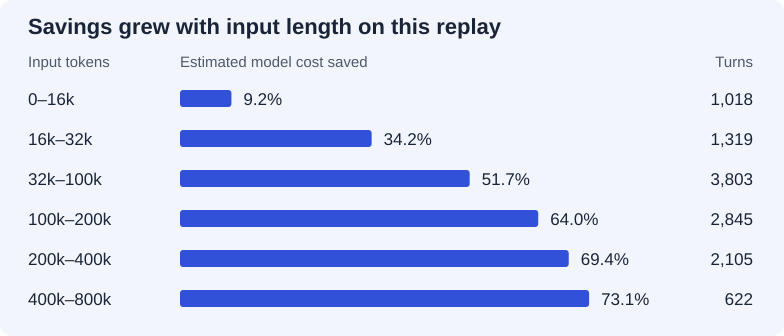

dense
denseOpus 4.8 across 64 coding sessions
Across 11,712 turns, estimated model cost fell from $861.28 to $312.20 with Condense. Headroom cache mode raised it to $878.31.
| Strategy | Matched turns | Baseline | After | Input tokens saved | Model cost saved |
|---|---|---|---|---|---|
| Condense | 11,712 | $861.28 | $312.20 | 72.7% | 63.8% |
| Headroom · cache mode | 11,712 | $861.28 | $878.31 | -2.2% | -2.0% |
Run date 2026-07-23 · 64 SWE-chat sessions · Company-published · Model costs before service fees
Reading this replay
The harness rewrote recorded requests, simulated prompt caching and applied Opus 4.8 prices. These totals estimate the model bill for a fixed conversation. Agent decisions on a new trajectory and Condense service fees fall outside this calculation.
How savings change with context length
Turns are grouped by the length of the original input. Negative savings indicate an increase. The overall percentage is calculated from totals.

| Input length | Matched turns | Baseline | After | Input tokens saved | Model cost saved |
|---|---|---|---|---|---|
| 0-16k | 1,018 | $11.68 | $10.61 | 31.9% | 9.2% |
| 16k-32k | 1,319 | $26.28 | $17.28 | 62.4% | 34.2% |
| 32k-100k | 3,803 | $145.72 | $70.34 | 68.6% | 51.7% |
| 100k-200k | 2,845 | $226.27 | $81.52 | 72.0% | 64.0% |
| 200k-400k | 2,105 | $297.93 | $91.12 | 74.1% | 69.4% |
| 400k-800k | 622 | $153.39 | $41.33 | 76.7% | 73.1% |
| Input length | Matched turns | Baseline | After | Input tokens saved | Model cost saved |
|---|---|---|---|---|---|
| 0-16k | 1,018 | $11.68 | $10.95 | 2.7% | 6.3% |
| 16k-32k | 1,319 | $26.28 | $25.09 | 5.7% | 4.5% |
| 32k-100k | 3,803 | $145.72 | $144.31 | 1.7% | 1.0% |
| 100k-200k | 2,845 | $226.27 | $229.76 | -1.7% | -1.5% |
| 200k-400k | 2,105 | $297.93 | $310.16 | -4.2% | -4.1% |
| 400k-800k | 622 | $153.39 | $158.04 | -3.3% | -3.0% |
Inspect the evidence
Archived run files · Download the chart data · Replay methodology